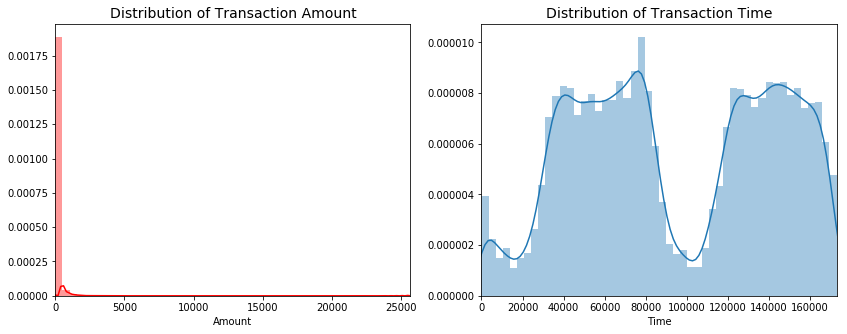

This report will test different methods on skewed data (Credit_Card_Fraud dataset). The idea is to compare if sampling techniques work better when there is an overwhelming majority class that can disrupt the efficiency of our predictive model..
The dataset contains transactions made by credit cards in September 2013 by european cardholders. This dataset presents transactions that occurred in two days, where we have 492 frauds out of 284,807 transactions. The dataset is highly unbalanced, the positive class (frauds) account for 0.172% of all transactions.
It contains only numerical input variables which are the result of a PCA transformation. Unfortunately, due to confidentiality issues, we cannot provide the original features and more background information about the data.
Features V1, V2, … V28 are the principal components obtained with PCA, the only features which have not been transformed with PCA are ‘Time’ and ‘Amount’.
Feature ‘Time’ contains the seconds elapsed between each transaction and the first transaction in the dataset.
Feature ‘Amount’ is the transaction Amount, this feature can be used for example-dependant cost-senstive learning.
Feature ‘Class’ is the response variable and it takes value 1 in case of fraud and 0 otherwise.
Outline
1: Understanding our data
2:Feature Engineering
2.1: Creating ‘Hour’ Feature
2.2: Exploring patterns difference between Normal and Fraud Transanctions
2.3: Exploring feature distribution difference between Normal and Fraud transactions
2.4: Generate a new dataframe “data_new”
2.5: Feature scaling with ‘Hour’ and ‘Amount’
2.6: Exploring feature importance
3: Splitting the Data (Original DataFrame)
4: Random Under-Sampling
5: Logistic regression classifier - Skewed data
6: Logistic regression classifier - Undersampled data
7: Logistic regression classifier - use Undersampled data for fitting and original test data for testing
1: Understanding our data
Summary:
The transaction amount is relatively small. The mean of all the mounts made is approximately USD 88.
Detect missing value: There are no “Null” values, so we don’t have to work on ways to replace values.
Most of the transactions were Non-Fraud (99.83%) of the time, while Fraud transactions occurs (017%) of the time in the dataframe
Distribution of Class
Distribution of Amount and Time

Load pakage and dataset
1 2 3 4 5 6 7 8 9 10 11 12 13 14 15 16 17
import pandas as pd import numpy as np
import seaborn as sns import matplotlib.pyplot as plt import matplotlib.gridspec as gridspec
# Classifier Libraries from sklearn.linear_model import LogisticRegression
# Classifier Evaluation from sklearn.metrics import precision_score, recall_score, f1_score, roc_auc_score, accuracy_score, classification_report from sklearn.metrics import confusion_matrix
data=pd.read_csv('creditcard.csv') data.tail(10)
Visualization of (Class, Time and Amount) distribution
#Distribution of Class print('Normal transactions:',round(data['Class'].value_counts()[0]/len(data['Class'])*100,2), 'of the dataset') print('Fraud transactions:',round(data['Class'].value_counts()[1]/len(data['Class'])*100,2), 'of the dataset')
fig, axs = plt.subplots(1,2,figsize=(14,7)) axs[0].set_title("Frequency of each Class") data['Class'].value_counts().plot(kind='bar',ax=axs[0])
axs[1].set_title("Percentage of each Class") data['Class'].value_counts().plot(kind='pie',ax=axs[1]) plt.show()
#Distribution of Amount and Time fig,ax= plt.subplots(1,2,figsize=(14,5)) sns.distplot(data['Amount'],ax=ax[0],color='r') ax[0].set_title('Distribution of Transaction Amount', fontsize=14) ax[0].set_xlim([min(data['Amount']), max(data['Amount'])])
sns.distplot(data['Time'],ax=ax[1]) ax[1].set_title('Distribution of Transaction Time', fontsize=14) ax[1].set_xlim([min(data['Time']), max(data['Time'])]) plt.show()
2.Feature Engineering
2.1: Creating ‘Hour’ Feature
1
data['Hour']=data["Time"].apply(lambda x : divmod(x, 3600)[0])
2.2:Exploring patterns difference between Normal and Fraud Transanctions
Difference 1: For the fraud transactions: the correlation between some of the variables is more pronounced. The variation between V1, V2, V3, V4, V5, V6, V7, V9, V10, V11, V12, V14, V16, V17 and V18 and V19 presents a certain pattern
Difference 3: The most frequent fraud transactions were happended at 11:am on the first day. The rest of Fraud transactions were happened between 11pm-9am. Indicating that the credit theft don’t want to attract the credit card owner’s attention, so they prefer to choose the time when the owner sleep and the time when consumption frequency is high.
1 2
# High Consumption frequency: between 9:00 am to 11:00 pm sns.factorplot(x='Hour',data=data,kind="count", palette="ocean", size=6, aspect=3)
2.3: Exploring feature distribution difference between Normal and Fraud transactions
Figures below present the distribution of different variables between Normal and Fraud,we should choose those variables which has significant difference. We drop variables:’V8’, ‘V13’, ‘V15’, ‘V20’, ‘V21’, ‘V22’, ‘V23’, ‘V24’, ‘V25’, ‘V26’, ‘V27’, ‘V28’
# Feature scaling with 'Amount' and 'Hour' col = ['Amount','Hour'] from sklearn.preprocessing import StandardScaler sc =StandardScaler() data_new[col] =sc.fit_transform(data_new[col]) data_new.head()
#导入库 from sklearn.ensemble import RandomForestClassifier import plotly.offline as py py.init_notebook_mode(connected=True) import plotly.graph_objs as go import plotly.tools as tls
### 3:Splitting the Data (Whole DataFrame) Before proceeding with the Random UnderSampling technique we have to separate the orginal dataframe. Why? for testing purposes, we want to test our models on the original testing set not on the testing set created by either of UnderSampling or Oversampling techniques. The main goal is to fit the model either with the dataframes that were undersample and oversample (in order for our models to detect the patterns), and test it on the original testing set.
1 2 3 4 5 6 7 8 9 10 11 12 13 14 15
from sklearn.model_selection import train_test_split
print("Number transactions train dataset: ", len(X_train)) print("Number transactions test dataset: ", len(X_test)) print("Total number of transactions: ", len(X_train)+len(X_test))
------------------------------------------- Number transactions train dataset: 199364 Number transactions test dataset: 85443 Total number of transactions: 284807
-------------- Number transactions train dataset: 688 Number transactions test dataset: 296 Total number of transactions: 984
5:Logistic regression classifier - Skewed data
In this phrase, we will use the train and test data from the original skewed dataset. Our intuition is that skewness will introduce issues difficult to capture, and therefore, provide a less effective algorithm.
--------------------- Best parameters: {'C': 0.1, 'penalty': 'l1'} Best cross-validation score: 0.99914 Test set accuracy score: 0.99923 precision recall f1-score support
6:Logistic regression classifier - Undersampled data
In this phrase, we will use train and test data from the Undersampled data. We are very interested in the recall score, because that is the metric that will help us try to capture the most fraudulent transactions.
------------------------- Best parameters: {'C': 10, 'penalty': 'l1'} Best cross-validation score: 0.94477 Test set accuracy score: 0.90541 precision recall f1-score support
7:Logistic regression classifier - use Undersampled data for fitting and original test data for testing
Recall metric in the testing dataset: 0.91
We found a very decent recall accuracy when applying it to a much larger and skewed dataset. Also, as test on the larger and skewed data we will found a decrease of precision. That’s true, because this time there are more non-fraud transations in testing data. Since you want to identify all fraudulent data resp. At least raise all suspicious data which is probably at loss of precision. You are still reducing the amount which may has to be reviewed manually to tiny part of original transaction data. In our case, if we predict that a transaction is fraudulent and turns out not to be, is not a massive problem compared to the opposite.
----------------------------------------- Best parameters: {'C': 10, 'penalty': 'l1'} Best cross-validation score: 0.94477 Test set accuracy score: 0.97795 precision recall f1-score support